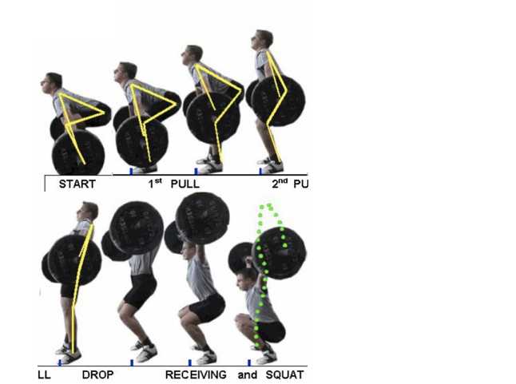
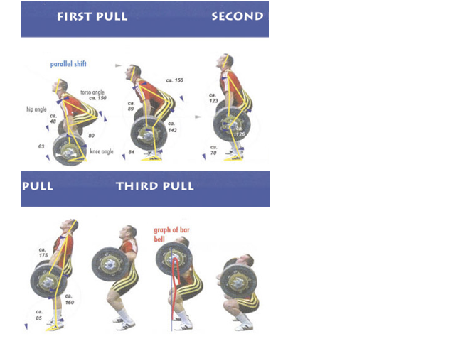

|
|
Weightlifting is an Olympic sport, in which an athlete lifts as heavy as possible in two predetermined movements: Snatch and Clean & Jerk.
Weights are loaded onto a 20kg barbell with bumper plates of various weights. Each athlete has three attempts to perform each movements, and the weights must not go down from attempt to attempt.
Three results are produced for each lifter: snatch, clean & jerk, and total (sum of the weights lifted in the two movements). Athletes are ranked based on the three results respectively (in Olympics, only the total counts) in their weight classes.
Snatch: weight is lifted in one smooth motion.
Clean & Jerk: weight is lifted in two separate motions.
Clean: weight is lifted above the chest and resting on the colar bone in one motion.
Jerk: weight is thrusted above the head in one motion without arm bending when locked out.
Split jerk (most common)

Power jerk

Squat jerk